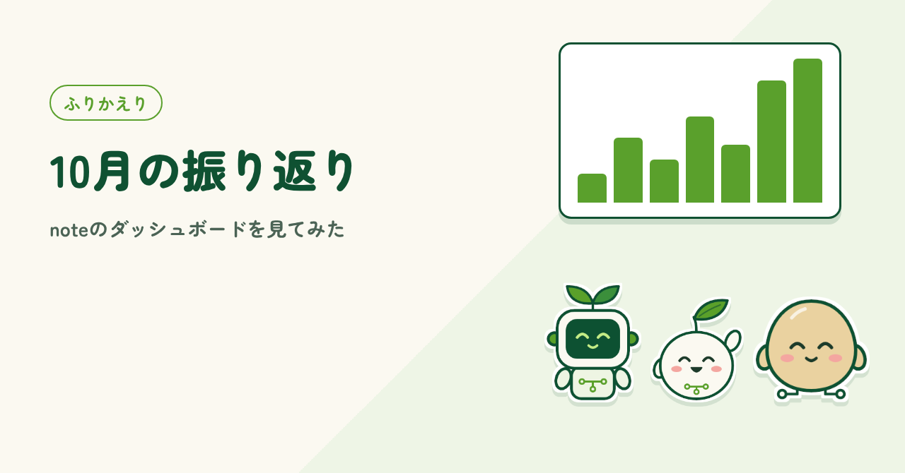
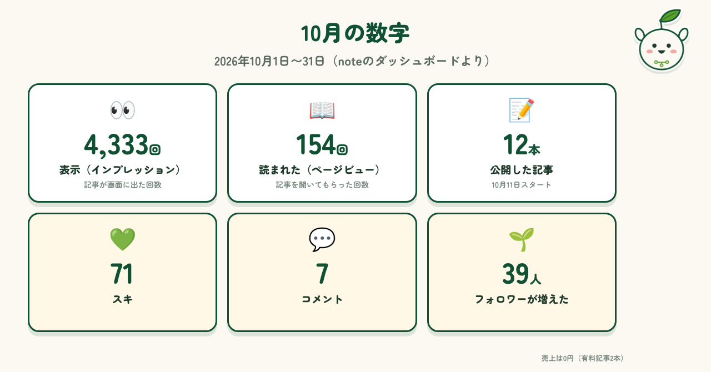
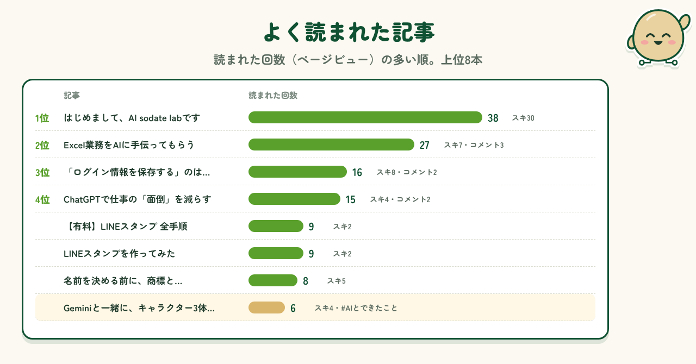
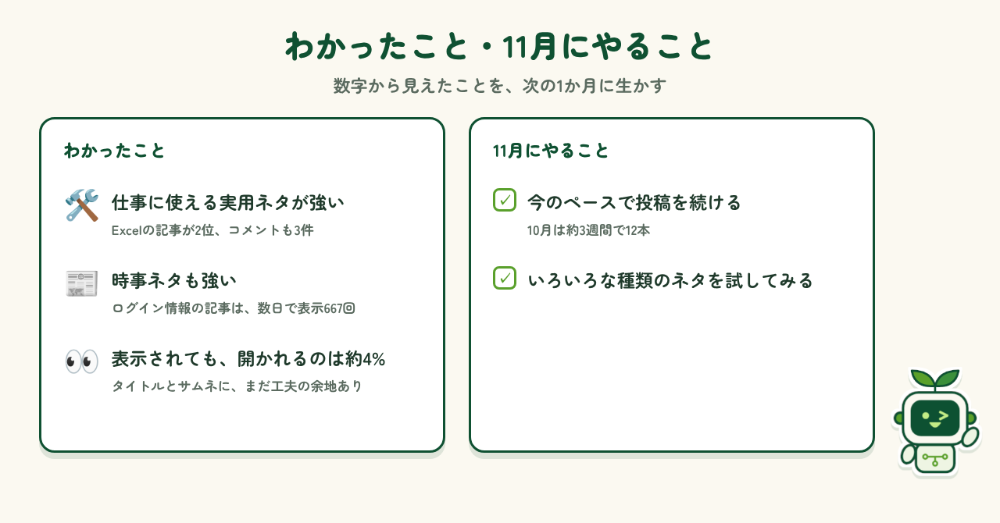

はじめに
10月11日にnoteを始めて、約3週間がたちました。記事を書いて投稿するのに手いっぱいでしたが、noteには「ダッシュボード」という機能があり、記事がどれくらい表示され、読まれたかを数字で見られることを知りました。せっかくなので、この数字を使って10月を振り返ってみます。どの記事がよく読まれたのか、11月に何をしたらいいのかを考えてみました。
10月の数字
10月の数字は、表示が4,333回、読まれたのが154回でした。記事は12本公開し、スキは71、コメントは7件いただき、フォロワーは39人増えました。有料記事の売上は、まだ0円です。スキやコメントは、本当にありがたいですね。読んでくれた人がいるんだと、実感できます。始めて1か月目の数字としては、まずまずなのかな、と思っています。

よく読まれた記事
いちばん読まれたのは「はじめまして、AI sodate labです」で、読まれたのは38回、スキは30でした。最初の記事なので、1位なのはそうかなという気がしていました。2位は「Excel業務をAIに手伝ってもらう」で、これは意外でした。一方、noteの「#AIとできたこと」の企画に出したGeminiの記事は、もっと伸びてもいいかなと思いましたが、そうでもありませんでした。

わかったこと・11月にやること
数字を見ると、仕事に使える実用ネタと、ニュースに関わる時事ネタが強いようです。ログイン情報の記事は、公開から数日で667回表示されました。ただ、表示されても開いてもらえるのは約4%なので、タイトルやサムネには工夫の余地がありそうです。11月は、今のペースで投稿を続けることを目標にします。あわせて、いろいろな種類の記事のネタも試してみたいと思います。

まとめ
ダッシュボードを見てみると、なんとなくの感覚が数字ではっきりして、次に何をすればいいかが見えてきました。読んでくれた方、スキやコメント、フォローをしてくださった方、本当にありがとうございます。11月も、AIと一緒に試したことを、わかりやすく書いていきます。これからも「AI sodate lab」をよろしくお願いします。
制作メモ
段落の構成と文章の下書きはAI（Claude）と作り、noteのダッシュボードの数字を見ながら、1段落ずつ確認・修正しました。図もAIと一緒に作っています。